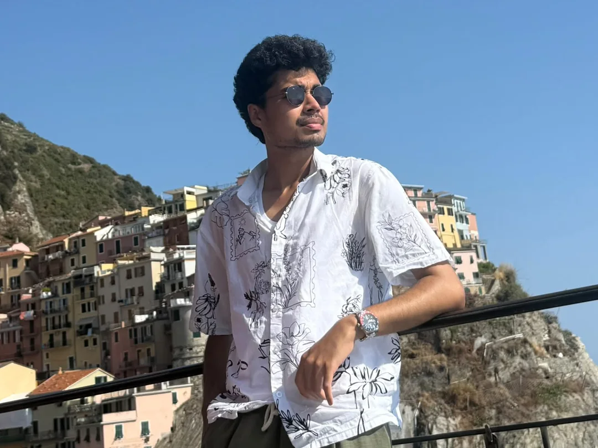
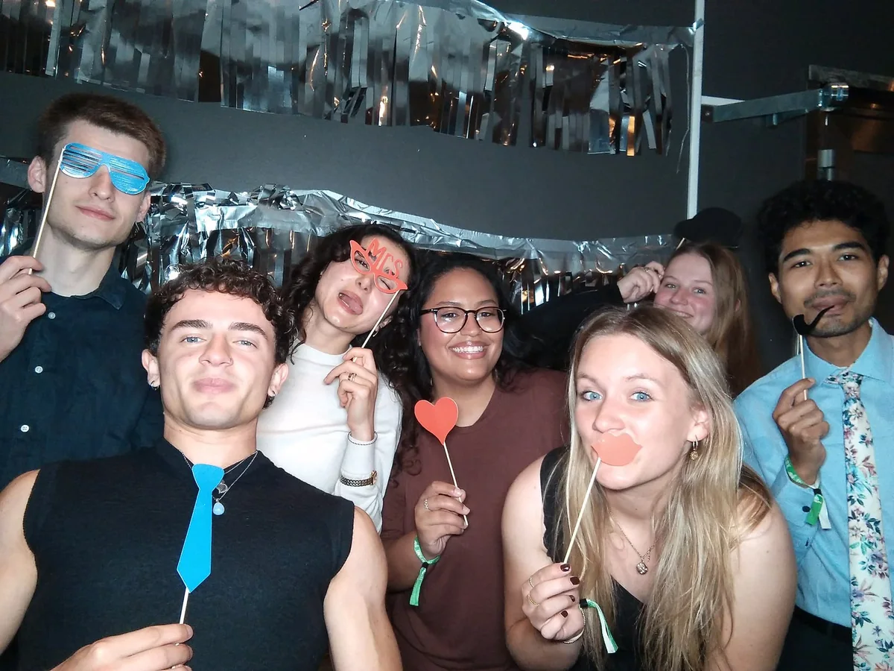
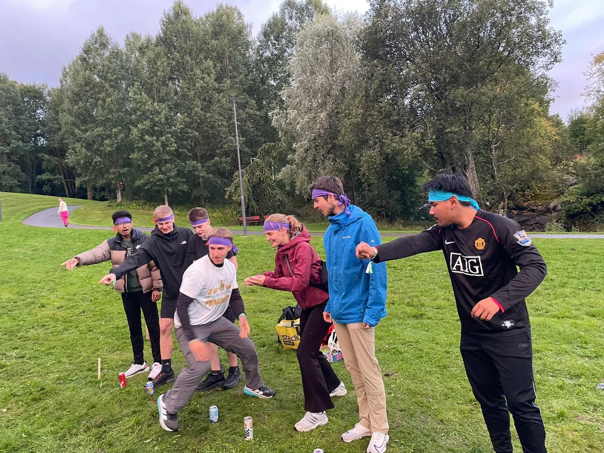
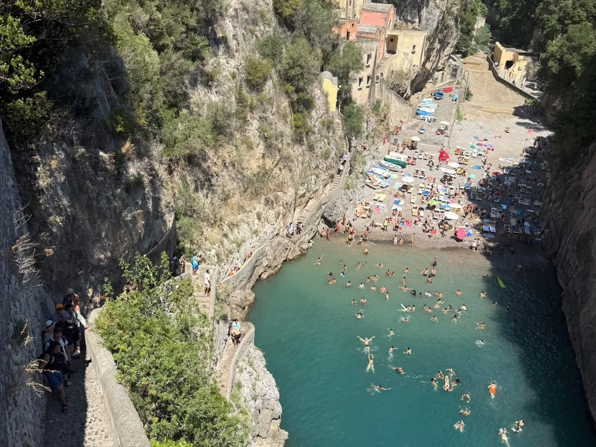
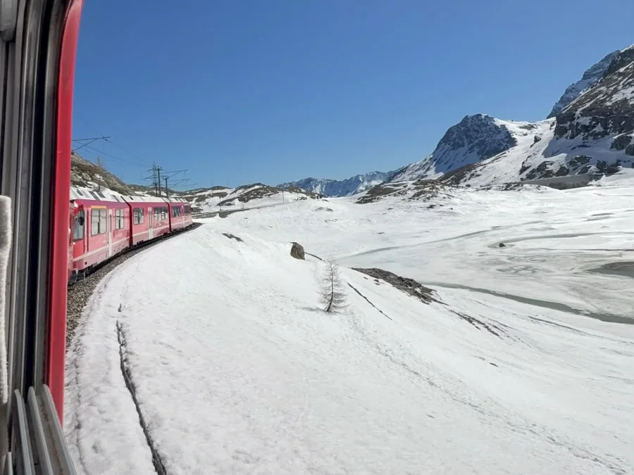
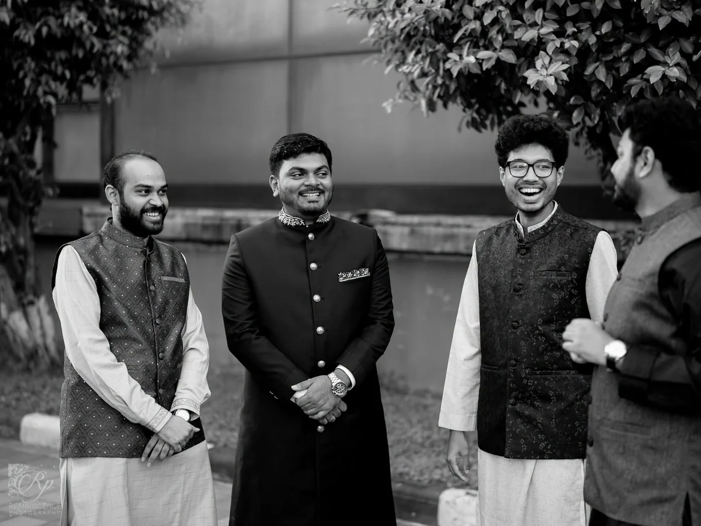
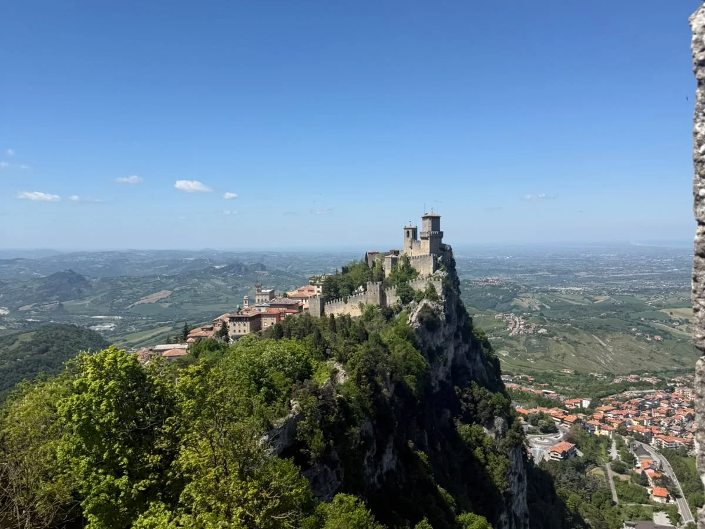

Travel
A change of scene.
I enjoy travelling and discovering places beyond my day-to-day routine. Living and studying in different countries has made exploration part of my education, too.
Away from research, I enjoy travelling, cricket, and historical fiction. Studying across countries has also made discovering new places and meeting new people a meaningful part of my life.
New places, a good story,
and time away from the screen.
I enjoy travelling and discovering places beyond my day-to-day routine. Living and studying in different countries has made exploration part of my education, too.
Cricket is one of my long-standing interests outside academic work.
I enjoy reading historical fiction and spending time with stories set in different periods.
I’ve recently joined a student choir in Sundsvall, singing in the lower voice range—bass/baritone.
Undergraduate study, early research, and teaching.
The first year of my Erasmus Mundus journey.
My current base for the second year of the programme.







About research, a shared interest, or a place worth exploring.